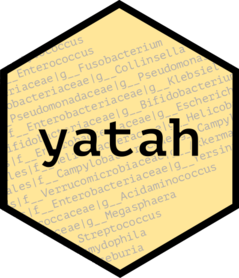

yatah 
The goal of yatah is to manage taxonomy when lineages are described with strings and ranks separated with special patterns like |*__ or ;*__.
For instance, the well-known Escherichia coli could be coded as k__Bacteria|p__Proteobacteria|c__Gammaproteobacteria|o__Enterobacteriales|f__Enterobacteriaceae|g__Escherichia|s__Escherichia_coli.
Installation
You can install the released version of yatah from CRAN with:
install.packages("yatah")And the development version from GitHub with:
# install.packages("remotes")
remotes::install_github("abichat/yatah")Example
lineages <- c(
"k__Bacteria|p__Actinobacteria|c__Actinobacteria|o__Coriobacteriales",
"k__Bacteria|p__Bacteroidetes|c__Bacteroidia|o__Bacteroidales",
"k__Bacteria|p__Bacteroidetes|c__Flavobacteriia|o__Flavobacteriales",
"k__Bacteria|p__Firmicutes|c__Bacilli|o__Bacillales",
"k__Bacteria|p__Firmicutes|c__Bacilli|o__Lactobacillales",
"k__Bacteria|p__Firmicutes|c__Clostridia|o__Clostridiales",
"k__Bacteria|p__Proteobacteria|c__Epsilonproteobacteria|o__Campylobacterales",
"k__Bacteria|p__Proteobacteria|c__Gammaproteobacteria|o__Enterobacteriales",
"k__Bacteria|p__Proteobacteria|c__Gammaproteobacteria|o__Pseudomonadales"
)-
is_rank()checks if the lineages are of the desired rank.
is_rank(lineages, rank = "order")
#> [1] TRUE TRUE TRUE TRUE TRUE TRUE TRUE TRUE TRUE
is_rank(lineages, rank = "species")
#> [1] FALSE FALSE FALSE FALSE FALSE FALSE FALSE FALSE FALSE-
is_clade()checks if the lineages belong to the desired clade.
is_clade(lineages, clade = "Proteobacteria", rank = "phylum")
#> [1] FALSE FALSE FALSE FALSE FALSE FALSE TRUE TRUE TRUE-
last_clade()extracts the last clade of the lineages.
last_clade(lineages)
#> [1] "Coriobacteriales" "Bacteroidales" "Flavobacteriales" "Bacillales"
#> [5] "Lactobacillales" "Clostridiales" "Campylobacterales" "Enterobacteriales"
#> [9] "Pseudomonadales"-
all_clades()extracts all clades of the lineages.
all_clades(lineages, simplify = TRUE)
#> [1] "Actinobacteria" "Bacillales" "Bacilli"
#> [4] "Bacteria" "Bacteroidales" "Bacteroidetes"
#> [7] "Bacteroidia" "Campylobacterales" "Clostridia"
#> [10] "Clostridiales" "Coriobacteriales" "Enterobacteriales"
#> [13] "Epsilonproteobacteria" "Firmicutes" "Flavobacteriales"
#> [16] "Flavobacteriia" "Gammaproteobacteria" "Lactobacillales"
#> [19] "Proteobacteria" "Pseudomonadales"-
taxtable()computes the taxonomic table corresponding to the lineages.
table <- taxtable(lineages)
table
#> kingdom phylum class order
#> 1 Bacteria Actinobacteria Actinobacteria Coriobacteriales
#> 2 Bacteria Bacteroidetes Bacteroidia Bacteroidales
#> 3 Bacteria Bacteroidetes Flavobacteriia Flavobacteriales
#> 4 Bacteria Firmicutes Bacilli Bacillales
#> 5 Bacteria Firmicutes Bacilli Lactobacillales
#> 6 Bacteria Firmicutes Clostridia Clostridiales
#> 7 Bacteria Proteobacteria Epsilonproteobacteria Campylobacterales
#> 8 Bacteria Proteobacteria Gammaproteobacteria Enterobacteriales
#> 9 Bacteria Proteobacteria Gammaproteobacteria Pseudomonadales-
taxtree()computes the taxonomic tree (formatphylo) from a taxonomic table.
tree <- taxtree(table)
tree
#>
#> Phylogenetic tree with 9 tips and 6 internal nodes.
#>
#> Tip labels:
#> Coriobacteriales, Bacteroidales, Flavobacteriales, Bacillales, Lactobacillales, Clostridiales, ...
#> Node labels:
#> Bacteria, Bacteroidetes, Firmicutes, Bacilli, Proteobacteria, Gammaproteobacteria
#>
#> Rooted; includes branch lengths.
plot(tree, show.node.label = TRUE)